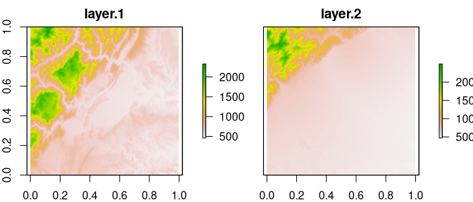

Boltzmann entropy (also called configurational entropy) has been recently adopted to analyze entropy of landscape gradients (Gao et al. (2017, 2018, 2019)). The goal of belg is to provide an efficient C++ implementation of this method in R. It also extend the original idea by allowing calculations on data with missing values.
Installation
You can install the released version of belg from CRAN with:
install.packages("belg")
And the development version from GitHub with:
# install.packages("remotes") remotes::install_github("r-spatialecology/belg")
Examples
As an example, we use two rasters - land_gradient1 representing a complex landscape and land_gradient2 representing a simple landscape:

The main function in this package, get_boltzmann(), calculates the Boltzmann entropy of a landscape gradient:
get_boltzmann(land_gradient1) #> [1] 188772.5 get_boltzmann(land_gradient2) #> [1] 121875.2
This function accepts a RasterLayer, RasterStack, RasterBrick, matrix, or array object as an input. It allows for calculation of the relative (the relative argument equal to TRUE) and absolute Boltzmann entropy of a landscape gradient. As a default, it uses a logarithm of base 10 (log10), however log and log2 are also available options for the base argument.
get_boltzmann(land_gradient1, base = "log") #> [1] 434664.7 get_boltzmann(land_gradient1, relative = TRUE) #> [1] 137645.4 get_boltzmann(land_gradient1, base = "log2", relative = TRUE) #> [1] 457248.1
Two methods of calculating the Boltzmann entropy of a landscape gradient are available: "hierarchy" (default) for the hierarchy-based method (Gao et al., 2017) or "aggregation" for the aggregation-based method (Gao et al., 2019). The aggregation-based method requires that the number of rows and columns in the input data must be a multiple of 2.
get_boltzmann(land_gradient1, method = "aggregation") #> [1] 188772.5 get_boltzmann(land_gradient1, relative = TRUE, method = "aggregation") #> [1] 137645.4
References
- Gao, Peichao, Hong Zhang, and Zhilin Li. “A hierarchy-based solution to calculate the configurational entropy of landscape gradients.” Landscape Ecology 32(6) (2017): 1133-1146.
- Gao, Peichao, Hong Zhang, and Zhilin Li. “An efficient analytical method for computing the Boltzmann entropy of a landscape gradient.” Transactions in GIS (2018).
- Gao, Peichao and Zhilin Li. “Aggregation-based method for computing absolute Boltzmann entropy of landscape gradient with full thermodynamic consistency.” Landscape Ecology (2019).